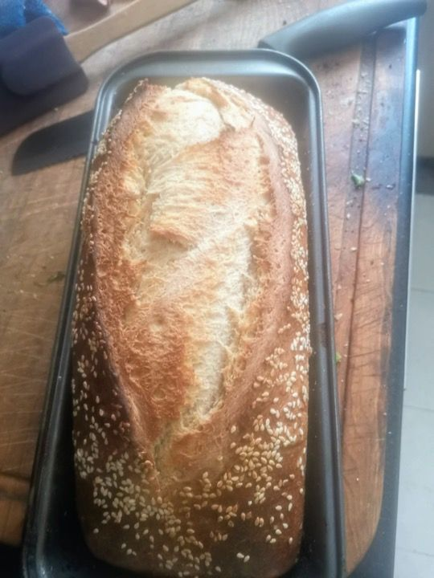
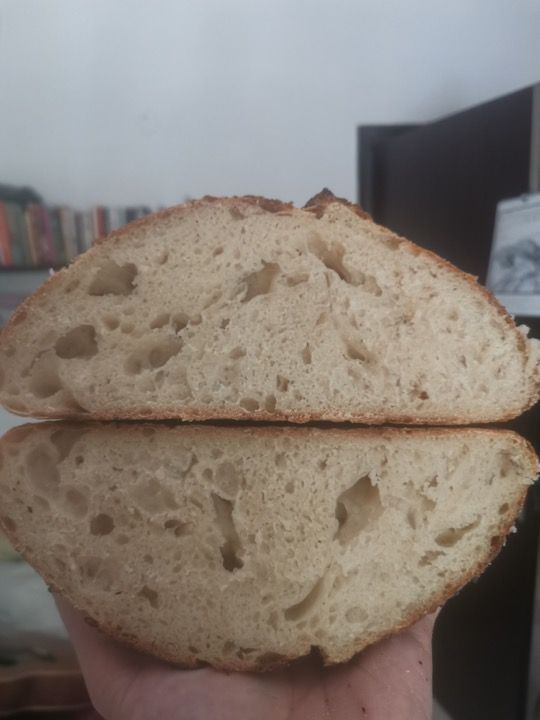
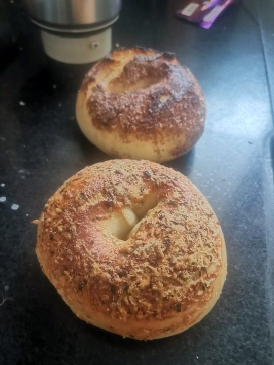
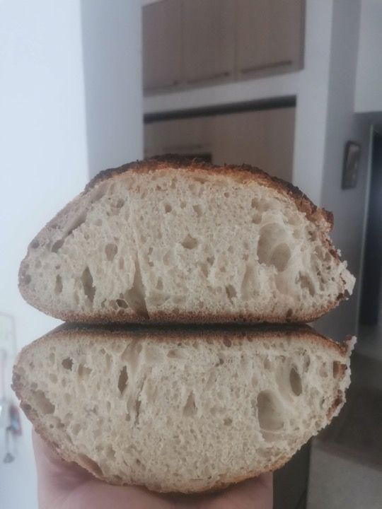
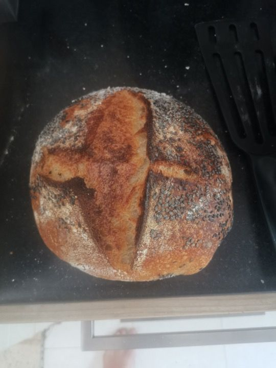
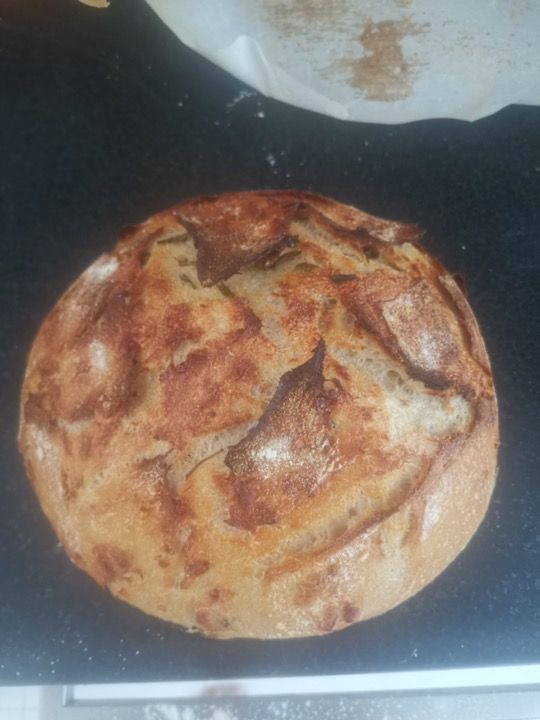
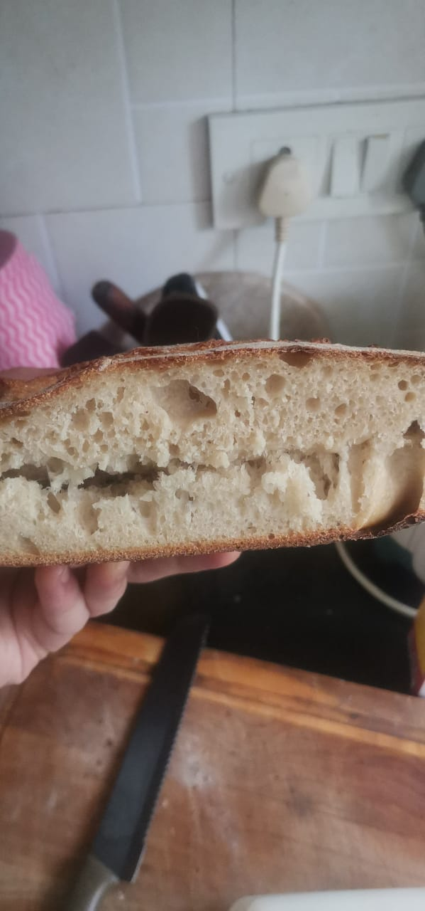

I've been baking sourdough for about 3 months now and it's starting to come together. I absolutely have failure loaves still, but it's usually because I'm experimenting or I get on a good video chat and forget a step.






I've had plenty of failures as you can see below as well (unfortunately, I didn't document most of the failures).

I'm a nerd, so I watched videos and read many articles about baking. I also have 2 friends who are professional bakers and took their remote coaching from time to time. But many things still were a lot of trial and error. Lots of stuff which was supposed to be obvious wasn't.
Most tutorials tell you "you have to fail a lot to get a feel for the dough"... I've found that this happens, but maybe these will help you shortcut the process. I'll keep updating it as I think of stuff.
Starter, levain, etc.
Do not waste flour feeding a ton of starter, just dump most of it out. By most of it, I mean everything except a spoon (20-30g) is fine.
It's not really a big advantage (if any) to keep feeding your starter. Keep it in the fridge, take a couple spoons out and just feed it in the morning you plan to mix (but better results if you feed it the night before also).
Levain is just a fancy word for starter - usually used to denote starter which is ready for baking (instead of the stuff in your fridge)
A "Stuff levain" won't pass the float test usually! Don't sweat it, look for bubbles on the side.
Float test is great, but the best indicator of an active starter are the bubbles on the side.
Want a more sour dough? Add more whole wheat to your starter
Proportions and recipes
Start with low hydration. You can work up quickly, but a loaf @ 60 or 65% is very easy to work with and will help you get a sense for different techniques and timings - this is why you do it.
Autolyse is super important if you aren't using fancy flour. Mix gently, then like 1hr in the fridge of just flour + water, then 30min outside, then add starter and salt.
Mixing and strengthening dough
Stretch and Fold is usually not enough. Mix your starter in nicely by making a little C-shape with your fingers together and use it like a backhoe to pick up the dough from underneath and stretch it out a bit. Do this for 5-7 minutes at least once, maybe twice in the first 1/2hr after mixing the starter in. dough will become really strong (you can stretch it nicely).
You don't need to maintain the "skin" when you stretch and fold, just go for it.
When shaping, first "degas" the dough - this means stretch it flat and pressing down till the air bubbles come out. If you don't you get big ass pockets of air later.
Shaping and Degassing: Degas first and then preshape very gently with as little flour as possible (this means just fold it over itself a couple times then kinda push it into a loose ball shape - no tension, wait 10-15min, then degass again and shape fully.
When shaping, don't stress getting it perfect. Working it too much will screw it up and add too much flour. If you've done the strengthening part well (mixing and stretch and fold), it will come together nicely. If you haven't, shaping won't do much anyway.
The bannaton (I use a plastic bowl and a towel) is supposed to hold up the dough in shape. So it shouldn't be too big or it will just go flat.
When you take a loaf out of the fridge, it won't pass the poke test! Even after 30-45min, it still might not and be fine.
When doing the poke test on wet dough, cover your finger with flour first.
Baking in shitty ovens or with bad equipment
Just make sure everything is as hot as you can get it - the oven and your baking vessel. That's the most important thing. *note: if all you have is a flimsy cookie sheet, maybe don't get that super-duper hot. Just 5-10min preheat is good.
If you're burning the bottom of your sourdough:
Use semolina (suji) on the pan/pot, and on top of the parchment paper to prevent burning.
Put tinfoil shiny side down on the rack if you're burning the bottom
Switch to broil after 20min for 10min if you're burning the bottom often
Take the loaf out after it has risen in the oven and put it on the rack directly if you're burning the bottom.
Cooling and serving
Let. it. cool. It keeps cooking. Give it 1hr minimum, ideally 2 or 3. It sours and gets better with age. If you don't cut it, it won't dry up.
Cut using a serraded knife, gently saw away, don't press down at all - will eventually happen.
Cut from the middle first. This let's you take fancy show-off crumb pictures, but it also means you can cut even pieces from each side easier and if you sandwich the two sides together, you can keep it from drying out.